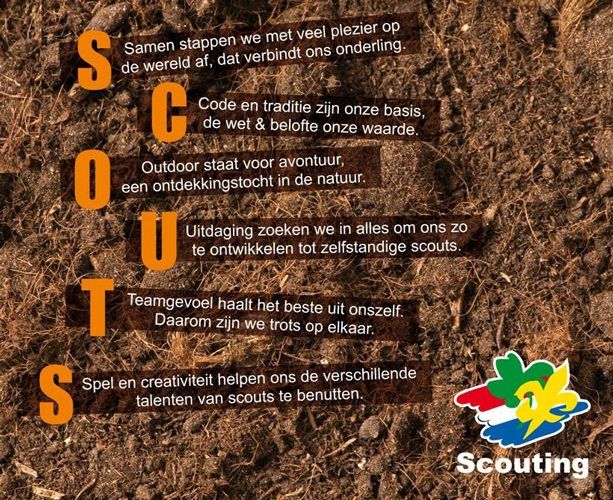
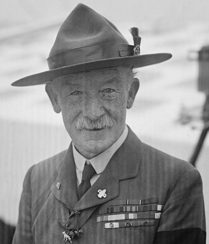

Wat is Scouting?
Scouting staat voor uitdaging! Wij bieden leuke en spannende activiteiten waarmee jongens en meiden worden uitgedaagd zich persoonlijk te ontwikkelen. Scouting is veel meer dan het doen van activiteiten in het bos of in het park. Er zit een visie achter het Scoutingspel, die wordt samengevat in de spelvisie SCOUTS, deze visie geeft aan waar Scouting inhoudelijk voor staat. De beginletters van elke regel vormen samen het woord 'scouts'.
Samen Dit element staat voor de betrokkenheid die je als scout hebt met de maatschappij, voor de onderlinge verbondenheid die scouts over de gehele wereld met elkaar voelen en voor het internationale aspect binnen Scouting.
Code Dit element staat voor de normen en waarden (de 'spelregels'), de ceremoniën en het fundament van Scouting.
Outdoor Dit element staat voor het buitenleven, waarbij de natuur niet alleen wordt gezien als omgeving waarin het spel van Scouting gespeeld wordt, maar ook als opvoedende waarde.
Uitdaging Dit element staat voor de persoonlijke ontwikkeling van scouts. Scouting is niet alleen een plezierige vrijetijdsbesteding, maar biedt ook mogelijkheden om jezelf te ontwikkelen en steeds weer je grenzen te verleggen.
Team Dit element staat voor het werken in subgroepen (oud leert jong) en de toenemende zelfstandigheid van de jeugdleden.
Spel Staat voor het Scoutingspel zelf, de veelzijdigheid ervan, de thematiek en het aanspreken op de creativiteit (zowel in fantasie als het creatief zijn in oplossingen).

Bij Scouting besteden kinderen en jongeren op een actieve en uitdagende manier hun vrije tijd in de natuur. Ze hebben veel plezier met elkaar en leren om samen te werken en respect te hebben voor de ander. Zo ontwikkelen de kinderen en jongeren zich op een natuurlijke manier tot zelfstandige mensen en krijgen ze de ruimte om te ontdekken en te leren.
Scouting buiten Noordwijkerhout
Scouting is een wereldwijde organisatie. Scouting Bosgeest werkt lokaal en is er vooral voor de Noordwijkerhoutse jeugd. Alle lokale groepen zijn verdeeld in Regio’s. Wij zitten samen met 45 andere verenigingen in de Regio Hollands Midden. De regio organiseert evenementen waar de groepen aan mee kunnen doen. Voorbeelden hiervan zijn de Bever-Doe-Dag, Welpenweekend en de Regionale Scouting Wedstrijden (RSW).
Alle groepen en Regio’s zijn ook onderdeel van Scouting Nederland. Scouting Nederland is de grootste jeugd- en jongerenorganisatie van Nederland en heeft 110.000 actieve leden! De 87.000 jeugdleden en 25.000 vrijwilligers van Scouting zijn verdeeld over meer dan 1.100 Scoutinggroepen. Scouting Nederland organiseert landelijke kampen en de landelijke scouting wedstrijden.
Wereldwijd zijn er twee scouting bonden, de World Organization of the Scout Movement (WOSM) voor zowel mannen en vrouwen en de World Association of Girl Guides and Girl Scouts (WAGGGS) een vereniging voor vrouwen.
Het programma dat Scouting biedt, is gebaseerd op de ideeën van de Engelsman Sir Robert Baden-Powell. Hij bedacht het Scoutingspel aan het begin van de 20e eeuw. Door er voortdurend een eigentijdse draai aan te geven, wordt Scouting steeds aantrekkelijker. Steeds meer jongens en meisjes in Nederland worden lid van een Scoutinggroep. Dat betekent dat Scouting aanslaat!

Oftewel: Scouting is behoorlijk veelzijdig! Bij Scouting Bosgeest maken we gebruik van deze visie door middel van de doorlopende leerlijn die vanuit Scouting Nederland wordt aangeboden. Onder het kopje “Spelvisie” kunt u hierover meer lezen.